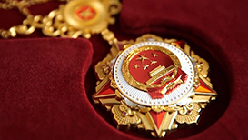
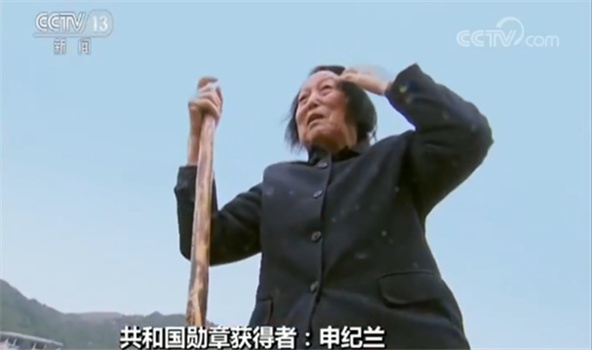
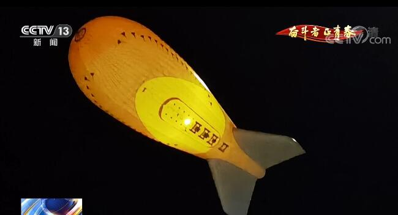
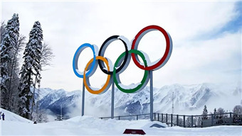

2021年5月22日，是一个值得铭记的日子——"杂交水稻之父"、"共和国勋章"获得者、中国工程院院士袁隆平永远地离开了自己深爱的这片沃土。稻田老农、泽被苍生；无双国士、禾下筑梦。袁老走后的一年里，人们送别他、怀念他、铭记他。因为在世间，“吃饭的事情最大”，他把一生献给了这件顶天大的事情；也因为他尽管荣誉等身，却始终真如少年，让我们深刻地了解到，什么是“大写的人”。
发布时间：2022-05-21 21:49:29
——————————————————————————————————————————————————————————————

致敬抗疫英雄 受勋前夜 总台央视时政记者专访了 这些做出杰出贡献的功勋模范人物 在这庄严时刻即将到来之际 让我们一起走进 “共和国勋章”获得者———钟南山
发布时间：2020-09-08 08:47:00
——————————————————————————————————————————————————————————————

今天的《共和国不会忘记》系列报道，我们来认识共和国勋章获得者申纪兰。 在山西平顺县西沟村，今年90岁高龄的申纪兰，仍然在坚持下地劳动。
发布时间：2019-09-19 09:08:19
——————————————————————————————————————————————————————————————

今天（5月18日）的《奋斗者·正青春》系列报道，我们就去认识这位专注于高原气候变化研究的女科学家。5月15日凌晨1时26分，搭载科考仪器的"极目一号"III型浮空艇开始升空。
发布时间：2022-05-18 11:21:45
——————————————————————————————————————————————————————————————

每当回想起北京冬奥会、冬残奥会总结表彰大会时的情景，短道速滑运动员武大靖都觉得心潮澎湃，"习近平总书记的重要讲话催人奋进，鼓舞着我们。" 2022年2月5日，在北京冬奥会短道速滑混合团体接力比赛中，武大靖与队友们一起顶住巨大压力，为中国体育代表团赢下北京冬奥会首枚金牌，取得"开门红"。武大靖也由此成为第一位连续两届冬奥会夺金的中国男子运动员
发布时间：2022-05-06 11:18:51